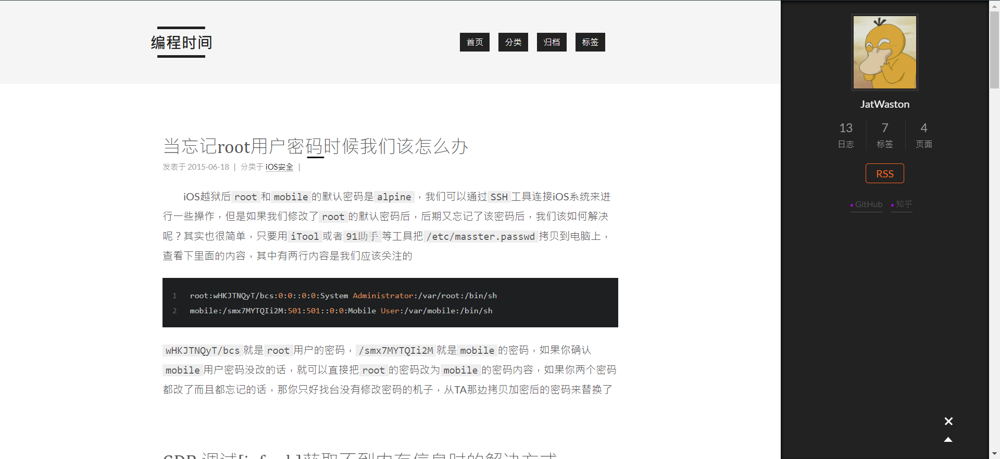
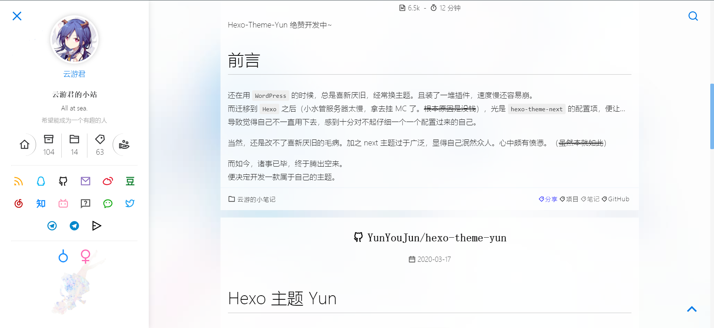
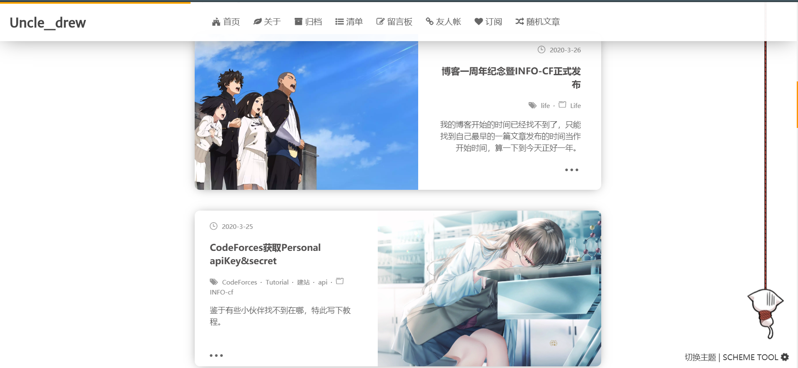
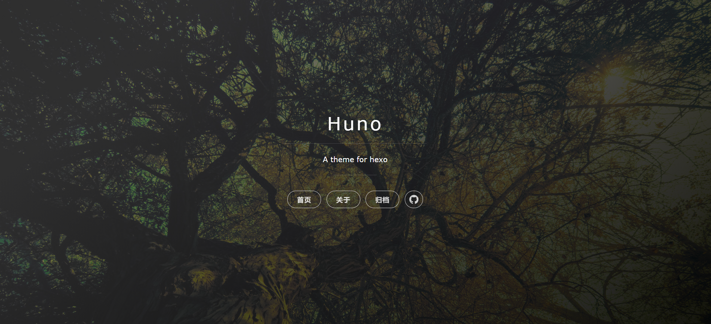
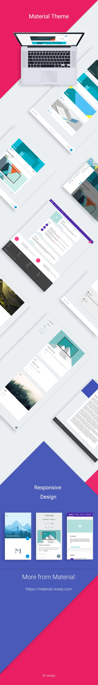
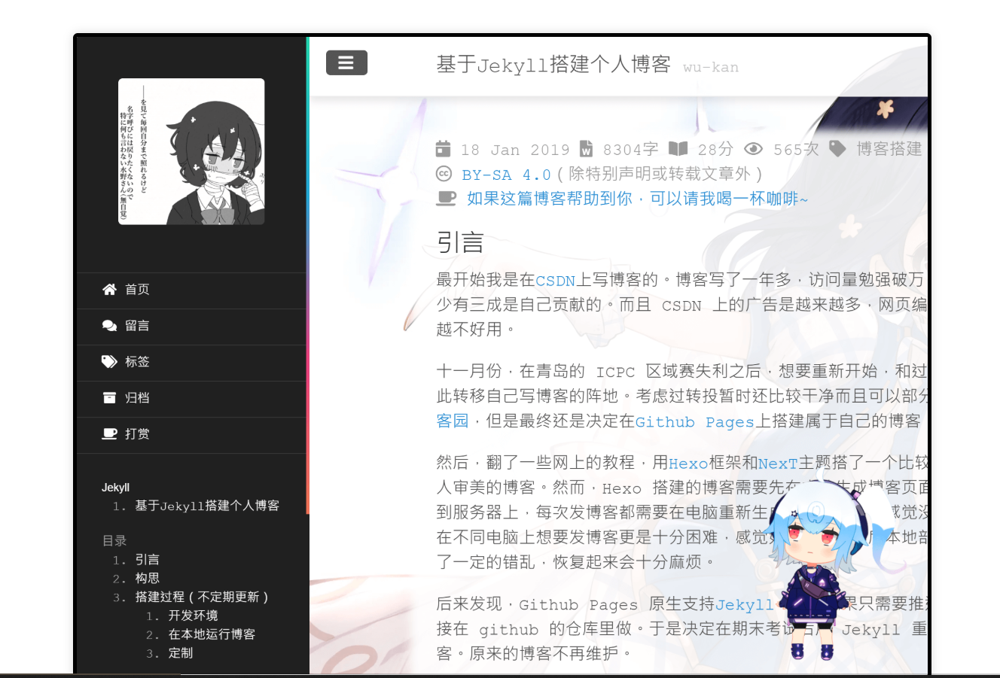
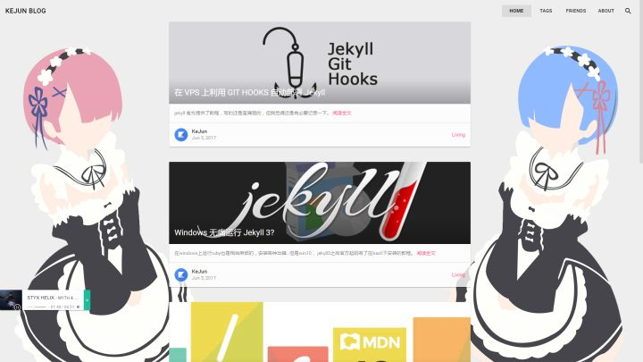
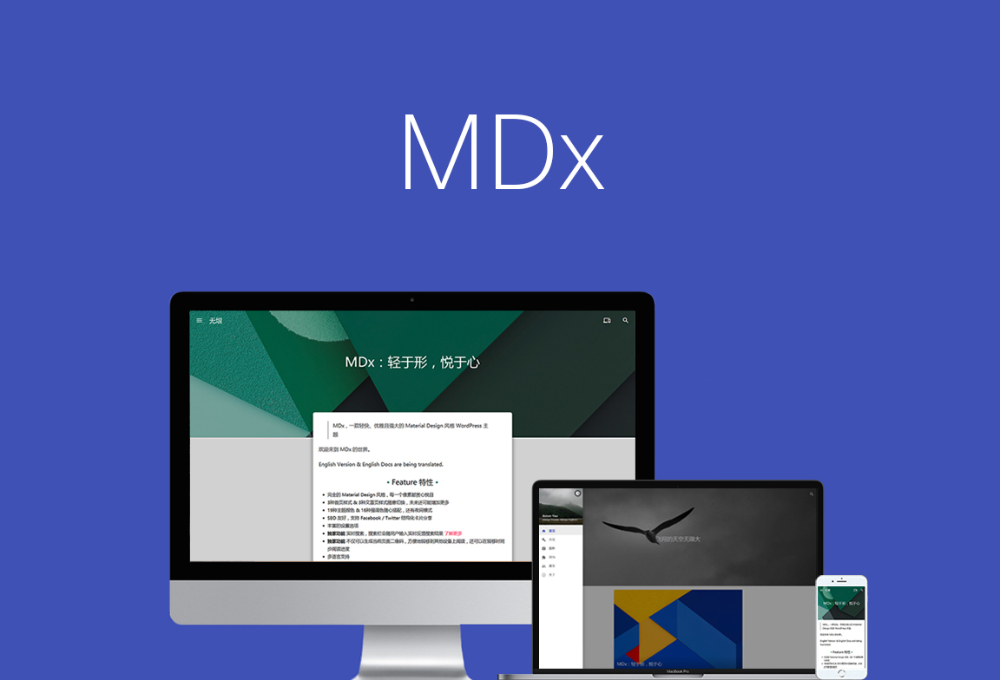
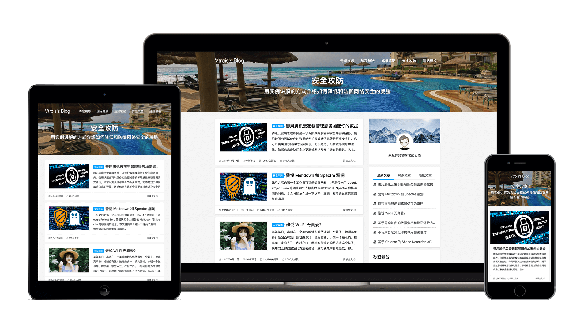

# 自建博客 OR 第三方博客平台
# 博客平台
如果你是只是想找一个平台保存自己的 markdown 的话，你可以直接使用三方平台
第三方博客平台
- 掘金
- 开源中国
- 知乎专栏
- 思否 (SegmentFault)
- CSDN
- 博客园
- 简书
- 慕课网手记
- 腾讯云社区
- 阿里云云栖社区
优点:
- 搭建成本低
- 开箱即用
- 无需维护
- seo 搜索引擎友好
缺点:
- 定制化程度低
但是博客平台的缺点就是定制化程度低，想打造有特色的博客很难
# 自建博客
如果你不想千篇一律，想打造一个有特色的博客，那么你可以选择自建博客，但是自建博客会比第三方博客平台的成本高一点
优点:
- 定制化程度高，能打造有特色的博客
- 能接入第三方服务，如广告，打赏，统计等等
- 完全的控制权，这里是你的地盘
缺点:
- 你需要具备一定编程基础
- 时间与金钱成本都较高
# 三大流行博客
# Hexo
Hexo 是一个快速、简洁且高效的博客框架。Hexo 使用 Markdown（或其他渲染引擎）解析文章，在几秒内，即可利用靓丽的主题生成静态网页。
# Hexo 优缺点
优点：
- 搭建的博客平台，速度快，免费，可以搭建在 Github 上。
- 操作比 Jekyll 简单，命令少，易于记忆。
- 支持 markdown，Hexo 最终生成的是一个静态博客，这就意味着它拥有其他博客系统无法比拟的低负载与高速度的特性。
缺点：
- 每次在一台新电脑或者别人电脑首次使用时，都要重新安装和配置编译环境，不适合随时随地愉快的写博客。（不能优雅的装逼，略微不爽）
- 相对 Wordpress 而言，没有强大的后台和插件支持，学习成本较高，需要一些网页基础。
# Hexo 主题浏览
传送门：Hexo 主题站
# 1. NexT
本人最喜欢的主题，简约风格，提供了 4 种不同的布局，各具特色
Demo: Muse mist Pisces Gemini

# 2. Yun
这是个二次元主题，浅色主题，内置后宫页面.......
Demo: Yun

# 3. Sakura
同二次元主题，首页大 banner，页面动态效果好
Demo: wallleap cndrew

# 4. Huno
干净的首页，Markdown 别具一格
Demo: Huno

# 5. Material
优雅、纯粹、质感
Demo: Material

# Jekyll
jekyll 是一个简单的免费的 Blog 生成工具，类似 WordPress。但是和 WordPress 又有很大的不同，原因是 jekyll 只是一个生成静态网页的工具，不需要数据库支持。但是可以配合第三方服务，例如 Disqus。最关键的是 jekyll 可以免费部署在 Github 上，而且可以绑定自己的域名。
# Jekyll 优缺点
优点：
- jekyll 是一个静态文件生成器，网站不需要数据库，只要把自己的博客放到对应的目录即可。
- 能部署到 github 或者 gitcafe 上，不需要自己的 vps，因为是静态的，迁移起来非常方便。
- 原生支持 markdown。现在 github 默认支持 jekyll, 所以原生的文件如果放到 github 上，它会自动帮你生成静态网站。
- 相对 hexo 而言，可以直接在 github 网页版上编辑和发布博客，PC 间切换和同步非常方便。（这点本人非常喜欢）
缺点：
- jekyll 用的 liquid 语法确实不是对程序员友好的，。不过 jekyll 功能比 hexo 强大很多，有时间折腾的可以选它。
- 相对 Wordpress 而言，没有强大的后台和插件支持，学习成本较高，需要一些网页基础。
# Jekyll 主题浏览
传送门：Jekyll 主题站
# 1. Wu-Kan
wukan 大佬的主题，二次元风格，相信我，进去后你会爱上这个主题的
Demo: Wu-Kan

# 2. 码志
简约，极速，响应式
Demo: 码志
# 3. MDUI
界面比较可爱，色彩搭配也很棒
Demo: MDUI

# WordPress
WordPress 是一种使用 PHP 语言开发的博客平台，用户可以在支持 PHP 和 MySQL 数据库的服务器上架设属于自己的网站。
用户可以在支持 PHP 和 MySQL 数据库的服务器上使用自己的博客。
WordPress 有许多第三方开发的免费模板，安装方式简单易用。不过要做一个自己的模板，则需要你有一定的专业知识。
比如你至少要懂的标准通用标记语言下的一个应用 HTML 代码、CSS、PHP 等相关知识。
# WordPress 优缺点
优点：
- 安装简单方便，甚至很多虚拟主机供应商都提供了 Wordpress 的一键式安装工具。用户连上传文件的步骤都省了。
- 功能强大，可扩展性高，丰富的插件使用起来更加方便。
- wordpress 搭建的博客对 seo 搜索引擎友好，收录也快，排名靠前。
缺点：
- 对域名空间要求，wp 需要自己购买虚拟主机，低配版大概两百多块。
- 迁移成本高，且插件装多了会变慢。
- Wordpress 对于中小型网站应该是不错的选择，但对于大型的门户网站，数据库、用户管理、内容的分类管理等方面的限制，还是会让 Wordpress 会有些力不从心的吧。
# WordPress 主题浏览
其实 WordPress 没啥好说的了，因为模板太多了.
传送门：WordPress 主题站
# 1. MDx
多种主题颜色与样式，夜间模式，卡片风格
Demo: MDx

# 2. Kratos
多种主题颜色与样式，夜间模式，卡片风格
Demo: Kratos

# 如何选择合适的博客框架
当你选择自建博客后，接下来就是选择合适的博客框架，下面是以上博客框架对比
| 框架 | 编程语言 | 主题数量 | 开发难度 | 是否需要服务器 |
|---|---|---|---|---|
| Hexo | node.js | 较少 | 中等 | 不需要 |
| Jekyll | ruby | 多 | 较难 | 不需要 |
| WordPress | PHP | 很多 | 容易 | 需要 |
大家可以根据自己的情况来选择适合框架，下面是送给选择困难症小伙伴的几种方法
- 省事流：根据本身技能选择，如果你本身就会 PHP 那么你大可以选择 WP, 这样能节省不少时间
- 省钱流：如果你不想花费任何成本来购买服务器或者域名，那么你可以选择 Hexo 或者 Jekyll
- 任性流；在选择前你可以去看看每个框架有哪些主题，选择你喜欢的主题的框架。